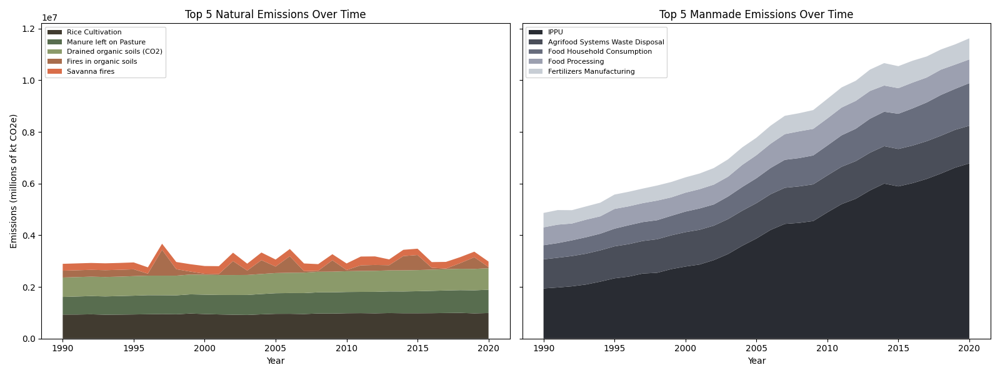

THE CARBON COST OF
FOOD PRODUCTION
How do agricultural practices affect our air?

Introduction
Analyzing CO₂ emissions in the agri-food sector over time is essential for understanding
the environmental and economic consequences of food production and their long-term impact.
Agricultural production is a major contributor to global greenhouse gas emissions every year,
with every stage of the supply chain playing a role, from crop cultivation to packaging to
transportation and consumption. With a growing global population, the demand for food constantly rises,
therefore driving production practices that often prioritize efficiency over sustainability. This trend
significantly contributes to climate change, threatening ecosystems, biodiversity, food security, and economic stability.
By analyzing emissions data across countries and years, we can gain better understanding of the relationship
between certain practices and climate change. Identifying these relationships is a crucial first step to developing
sustainable food production and consumption practices in the future.
To learn more about CO₂ emissions and the main contributors to climate change,
visit environmental and agricultural organizations such as the
Environmental Protection Agency (EPA) website,
NOAA website, or
Food and Agriculture Organizations (FAO) website.
Introduction to the data
In our analysis, we used a dataset from Kaggle titled "Agri-food CO2 emission dataset - Forecasting ML."
The data contains information on CO₂ emissions across 236 regions, over about 30 years for each region.
With 6,966 entries and 34 attributes, it offers a substantial amount of data, primarily focusing on various
agricultural practices and their resulting CO₂ emissions, measured in kilotonnes. Below is a list of the
attributes.
Geographic, Time, and Climate Data
| Attribute | Description |
|---|
| Area | Region or country |
| Year | Year of recording or prediction |
| Average Temperature °C | Average yearly temperature increase |
| Temperature Category | Temperature level |
Land Use, Fire, and Soil-Based Emissions
| Attribute | Description |
|---|
| Savanna fires | CO₂ emissions from fires in savannas |
| Forest fires | CO₂ emissions from fires in forests |
| Net Forest conversion | Change in forest area from deforestation and afforestation |
| Forestland | Land covered by forests |
| Drained organic soils (CO₂) | CO₂ emissions draining organic soils |
| Fires in organic soils | CO₂ emissions from fires in organic soils |
| Fires in humid tropical forests | CO₂ emissions from fires in humid tropical rainforests |
| Crop Residues | CO₂ emissions from burning or decomposing leftover plant material after crop harvesting |
| Rice Cultivation | Methane emissions from rice cultivation |
Livestock, Fertilizer, and Industrial Emissions
| Attribute | Description |
|---|
| Manure applied to Soils | CO₂ emissions from applying manure on fields |
| Manure left on Pasture | CO₂ emissions from manure left on pastures or grazing lands |
| Manure Management | CO₂ emissions from storing and managing manure |
| Fertilizers Manufacturing | CO₂ emissions from fertilizer production |
| Pesticides Manufacturing | CO₂ emissions from pesticide production |
| IPPU | CO₂ emissions from industrial processes and product use emissions |
Energy Use, Food, and Waste-Related Emissions
| Attribute | Description |
|---|
| On-farm energy use | Energy consumption on farms |
| On-farm Electricity Use | Electricity consumption on farms |
| Food Processing | CO₂ emissions from processing food |
| Food Packaging | CO₂ emissions from food packaging production |
| Food Transport | CO₂ emissions from transporting food |
| Food Retail | CO₂ emissions from the operation of retail food establishments |
| Food Household Consumption | CO₂ emissions from food consumption in households |
| Agrifood Systems Waste Disposal | CO₂ emissions from food waste disposal |
Population and Summary Data
| Attribute | Description |
|---|
| Rural population | Population living in rural areas |
| Urban population | Population living in urban areas |
| Total Population | Combined total population |
| Total Population - Male | Male population |
| Total Population - Female | Female population |
| Population Size | Size category of the population (S, M, L) |
| Total Emission | Total CO₂ emissions from all sources |

Visualizations and Analysis
Overall Emission and Temperature Trends
To fully understand the scope and trend of CO₂ emissions from agricultural practices,
we must first look at the broader patterns in total CO₂ emissions and the changes in global
temperature over time.
The chart on the left visualizes the total CO₂ emissions from 1990 to 2020, showing a steady,
but significant increase. While there are short periods where the level of emissions dips from year
to year, the overall trend follows an upward trajectory. In 2020, 18 million kilotonnes of CO₂ are
emitted into our atmosphere. This rise reflects the growing global population and its increasing
demand for efficient, large-scale food production, which often relies on unsustainable, emission-producing
agricultural practices.
The chart on the right visualizes the trend in average global temperature change across different countries
over the same time period. Again, while the temperature fluctuates, the overall trend shows a rising global
temperature. In 2020, we have reached an all time high, with the average rise in temperature across countries
being 1.5° Celsius, or 34.7° Fahrenheit.
The side-by-side graphs emphasize the correlation between CO₂ emissions and the rising global temperature.
Examining the trends closely, we can see similar peaks and troughs like the spike in both total emissions
and average rise in temperature in the 1997-1998 range and the drop in both emissions and average rise in
temperature in 2011. These fluctuating trends represent the tension between sustainability and efficiency in
providing food for a growing population. With both emissions and rising temperature higher than ever, the
environmental and economic impacts become more imminent.
Top Emission Producing Practices
To better understand what agricultural practices are contributing to these overall trends, we then chose
to examine the top five most emission-intensive agricultural practices from 1990-2020, divided into
emissions from natural processes (left) vs emissions from manmade processes (right).

These two stacked area charts help reveal two important pieces of information: which practices
contribute the most to emissions, and how these practices have changed over time.
The natural emissions chart shows that rice cultivation is consistently the highest CO₂e emitting practice
of natural emissions. This may be influenced by global dependence on rice as a food staple across cultures.
Additionally, the rice cultivation process (involving flooded paddy fields) contributes so much to these emissions,
as it provides ideal grounds for bacteria that produce a significant amount of bacteria that produce methane, an
equivalent greenhouse gas to CO₂. Though it is the greatest contributor of CO₂e emissions within this category,
its emission levels have remained fairly steady of the past 30 years. This is a trend followed by the next top
two most emission-producing natural practices: manure left on pastures and draining organic soils. The other top
emission-producing practices, fires in organic soils and savanna fires, show greater fluctuation, as they are typically
more sporadic or rare, likely due to climate conditions or land management.
The manmade emissions chart shows a vastly different trend. Over the past 30 years, all five major contributors
have shown a growth, most prominently shown by the expanding area of IPPU (Industrial Processes and Product Use).
Among the group, IPPU is the highest contributor to these emissions. This category is likely so large because it
encompasses emissions from multiple industrial activities in the agri-food sector, like refrigeration or the various
production of chemicals used in food packaging or processing. This growth shows the rapid industrialization of the food
production process, even over the past 30 years. The other most contributing factors include agri-food waste systems
disposal, food household consumption, food processing, and food manufacturing, further reflecting the dependence on
industrialization in agricultural practices. The group with the next most area growth is food household consumption,
reflecting the global population's growing consumerist tendencies and development of countries. Overall though, while
these categories exhibit growth, they maintain relatively stable emissions throughout the years. Altogether, these trends
show the dependence upon infrastructure and industrialization within agricultural practices and food systems.
Emissions Choropleth Map
While recognizing what agricultural practices contribute most to CO₂e emissions is important to creating more
sustainable ones, it is also important to recognize where these emissions are being most produced.
To analyze which countries emit the most CO₂e, we created a choropleth map that shows the level of total
CO₂e emissions across the world over the past 30 years. The map highlights major contributors to these
emission, such as China, India, the United States, and Brazil, as these countries consistently appear darker
across time. The darker shades in many of these countries reflect the worsening of CO₂e emissions,
with China, India, and the United States seeing continued increases in their emissions levels as they
continue to industrialize and grow their agricultural practices. Other countries, particularly Indonesia,
have more variable patterns, showing a back-and-forth between worsening emissions vs efforts toward more
sustainable practices or green movements. Noticeably, Brazil shows a significant reduction in emissions
around 2012, likely due to the rollback of deforestation in the Amazon. The color changes in the map over
time reflect the history of CO₂e emissions and how major contributors have maintained their position
over time.
Emissions by Population Factors
Thinking about how population affects the demand for food, we wanted to look at how population
factors affect overall emissions.
The interactive bubble chart above reveals two major trends: regions with smaller populations tend to have greater
per capita emissions, and there is a general trend that the greater the population size, the greater the overall
emissions. In areas with smaller populations, emissions per capita can be higher due to the fact that their small
populations mean that emission-intensive practices have a disproportionally large effect on the emissions per person.
With fewer people to offset the impact of emissions, these practices result in higher emissions per capita compared
to highly populated areas. In more populated regions, per capita emissions are spread across a large population, even
though these areas contribute the most to total emissions. This trend of large populations and large overall emissions
reflects the growing demand for food, and therefore the greater reliance on industrialized agricultural practices.
Top Agricultural Emissions by Country and Category
While knowing which countries emit the most is valuable, it’s equally important to understand how those emissions happen.
Agricultural emissions are driven by a wide range of activities — from land-use changes like deforestation to food processing, transportation, and livestock management.
To better understand the source-level patterns within high-emitting countries, we created a heatmap that shows the top 20 agricultural-emitting countries and their leading emission categories from 1990 to 2020.
The interactive chart below allows viewers to filter by year and examine how emissions have changed over time within each country–category combination.
Each square in the heatmap represents total emissions (in kilotonnes of CO₂ equivalent) for a specific category in a given year. The darker the square, the higher the emission level.
The chart focuses on the top 10 global emission sources, including Net Forest Conversion, Rice Cultivation, IPPU (industrial processes),
Fertilizer Manufacturing, and Food Household Consumption. Countries like Brazil stand out for forest-related emissions, while
China and India show consistently high emissions from food and energy systems. This breakdown helps reveal the structural drivers of agricultural
emissions and the diversity of challenges facing different nations.
Summary and additional work
In this analysis, we aimed to explore the factors that impact and that are impacted by CO₂e emissions in the
agri-food sector over the past 30 years, particularly focusing on how agricultural practices affect climate change.
Our findings reveal that agricultural production, driven by a growing global population and their demand for food,
contribute greatly to greenhouse gas emissions every year. Trends in our visualizations show a strong correlation
between increasing CO₂ levels and the annual increase in temperature, contributed to by both natural and industrial
practices, though industrial practices have shown the most growth over time. Our geographic analysis highlights major
emitters like China, India, and the U.S. Our population analysis shows that smaller populations have higher per capita
emissions and larger populations have higher overall emissions.
The dataset ends in 2020 and uses machine learning to predict the later years, so the more recent data accuracy could
vary. That being known, it would be interesting to examine more clearly how the COVID-19 pandemic affected emissions
from agricultural practices. Furthermore, exploring alternative, more sustainable agricultural practices and their
potential/current emissions could provide insight into how to develop sustainable practice on a large scale in
the future.